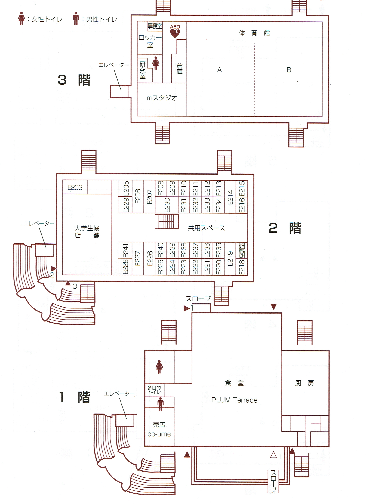

{% load static %}
<html>
<head>

    <meta name="viewport" content="width=device-width,initial-scale=1">

    <title>Tsuda app</title> <!--サイト名-->
    <!-- <link rel="stylesheet" href="menupage.css"> -->
    <link rel="stylesheet" href="//maxcdn.bootstrapcdn.com/bootstrap/3.2.0/css/bootstrap.min.css">
    <link rel="stylesheet" href="//maxcdn.bootstrapcdn.com/bootstrap/3.2.0/css/bootstrap-theme.min.css">
    <link href='//fonts.googleapis.com/css?family=Lobster&subset=latin,latin-ext' rel='stylesheet' type='text/css'>
    <link rel="stylesheet" href="{% static 'css/shokudo.css' %}">
</head>
<body>
  <div class="page-header">
    <div style="text-align: center">
      <h1>T S U D A　　　A P P</h1> <!--ページタイトル-->
    </div>
    <div class="btn-gradient-radius">
    <a href="/menupage">MENU PAGE</a>
  </div>
  </div>

<h2>食堂</h2>
<br>
<a class="btn btn-default" href="/map"><span class="glyphicon glyphicon-chevron-left" aria-hidden="true"></span> 戻る</a>
<br><br><h1></h1>
<!--  試しに写真を入れてみた -->


<br>

  <div class="page-footer">
    <footer>
    </footer>
  </div>

</body>
</html>
